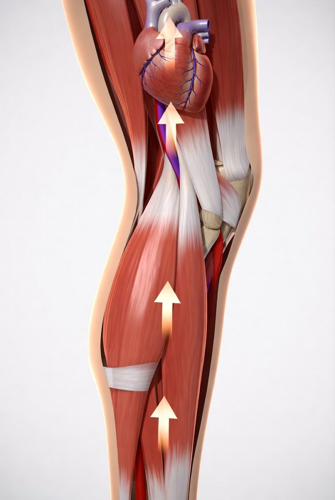
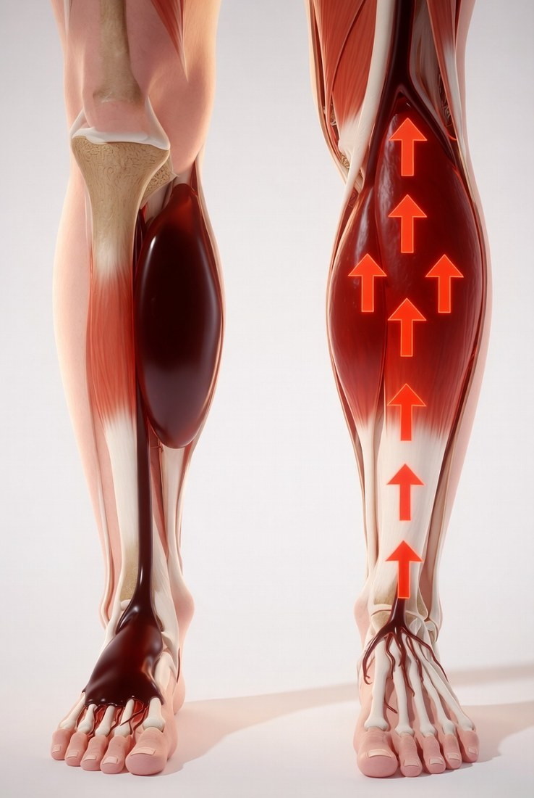
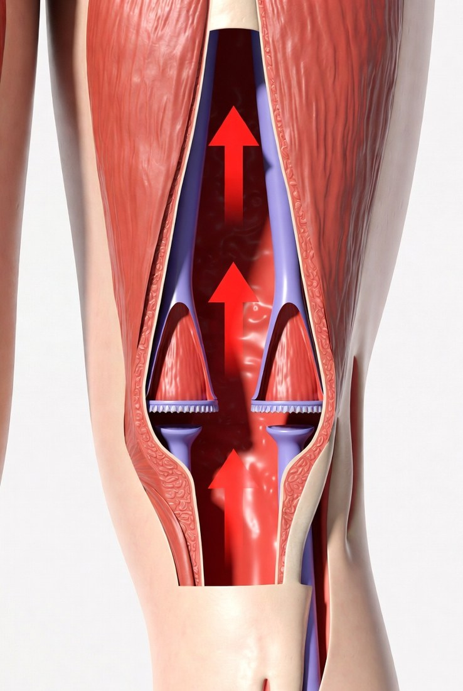
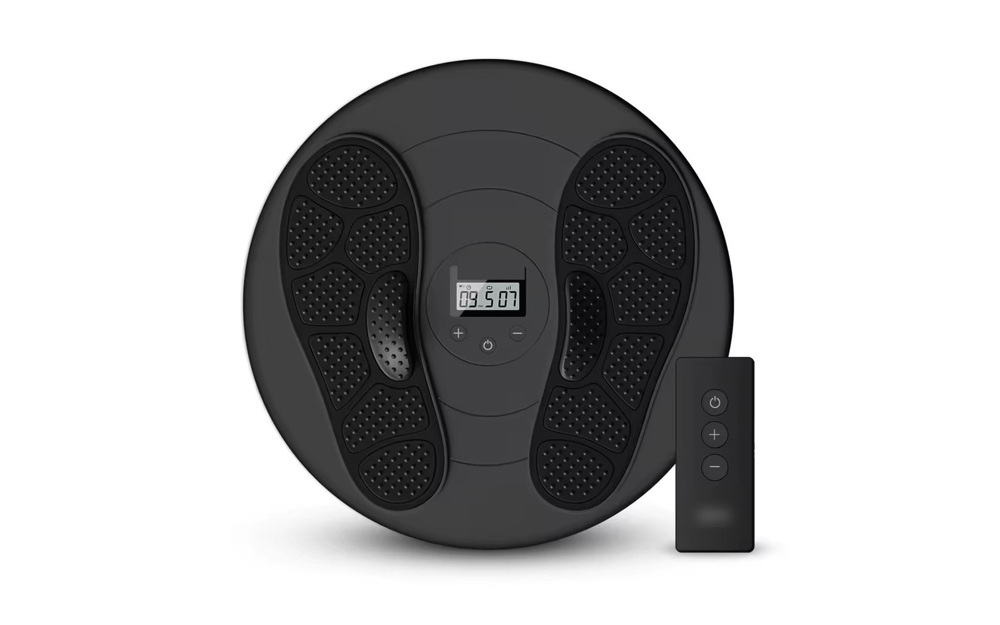
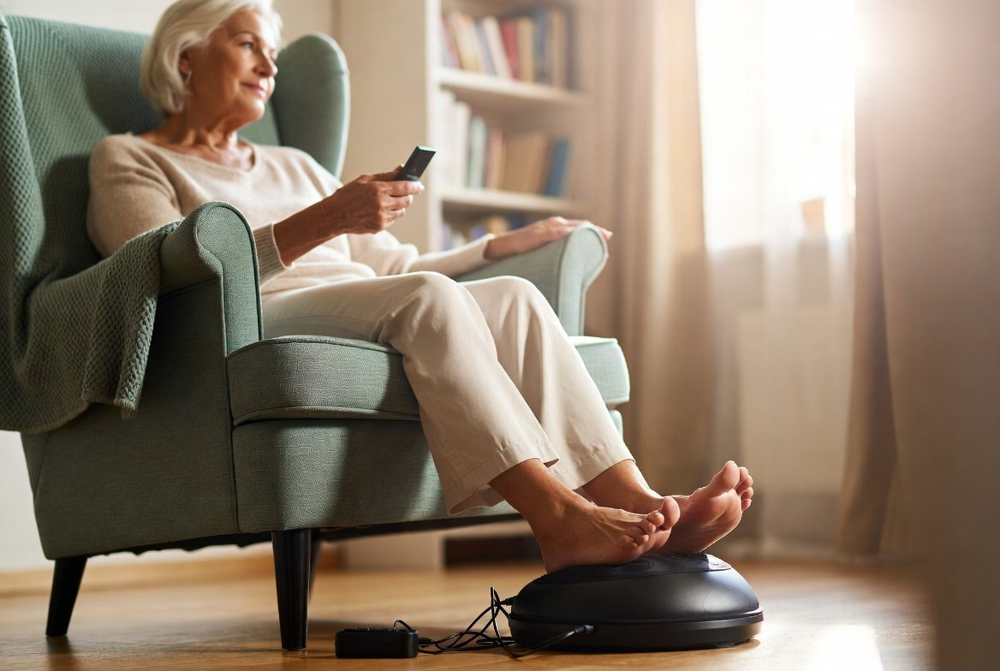

Retired and Sitting More Than Ever? Here's What It's Quietly Doing to Your Legs.
My legs got worse after I stopped working, not better. I couldn't make sense of it — until someone explained the one thing about sitting that nobody warns you about.

When I retired at 64, I'll admit I was looking forward to sitting down. Forty-odd years of work, and the idea of long mornings in my chair with the paper and a coffee sounded like heaven. What nobody told me was that my legs would get worse for it. I'd always assumed that resting more would be easier on them. Instead, within about a year of retiring, my legs felt heavier and more tired than they ever had when I was working — and my feet had started going cold and a bit prickly the moment I settled in for the evening.
It made no sense to me. I was finally off my feet, taking it easy, and my legs were complaining more than ever. I assumed it was just age catching up. It took a conversation with my son-in-law, who works in physiotherapy, to explain what was actually going on — and it had everything to do with all that lovely sitting I'd been doing.
First — does this sound like you?
- You sit for long stretches now — and your legs feel heavier for it, not lighter
- Your legs or ankles feel tired and swollen by the afternoon
- Your feet go cold or tingly soon after you sit down in the evening
- You feel like your legs have got worse since you slowed down or retired
What sitting quietly does to your legs
Here's the part nobody warns you about. The blood in your legs has to travel uphill to get back to your heart. Your heart does some of that work — but a great deal of it depends on your calf muscles. Every time they contract, they squeeze the veins and push blood upward, like a second pump tucked into each leg. The doctors call it the calf muscle pump, and it only works when the muscles actually move.
When you walk around all day at a job, those muscles are firing constantly without you ever thinking about it — the pump is working. But when you sit for hours, comfortable as it is, those muscles barely move at all. The pump goes quiet. Blood and fluid settle in your lower legs instead of being pushed back up. That pooling is the heavy, tired, swollen feeling — and the cold, prickly feet.
That comfortable chair I'd looked forward to my whole working life was quietly switching off the very pump my legs depended on.
So it wasn't really age at all, or not only. It was the sitting. And once I understood that, the fix made sense too: the muscles simply needed a reason to start working again — without me having to be on my feet all day like I used to be.
How Renvia restarts your leg's natural pump — in 3 steps



Why "just move more" wasn't the whole answer
The obvious advice is "well, get up and walk about more." And yes, walking genuinely helps the pump — I'm not going to pretend otherwise. But here's the trap: on the days my legs already felt heavy and tired, a walk was the very last thing I wanted to do. I'd try, my legs would ache, and I'd end up back in the chair feeling worse. I needed a way to get those calf muscles working even on the days I was sat down — something that gave my legs the equivalent of a walk without me having to force one.
What finally worked — from the chair
It turns out there's a well-established tool for exactly this. It's called EMS — Electrical Muscle Stimulation — and it sends gentle, painless pulses through the feet and lower legs that make the muscles contract and relax on their own. In plain terms, it gives your calf pump a workout while you sit perfectly still. Physiotherapy clinics have used the idea for years. My son-in-law pointed me to a device I could use at home called the Renvia Circulation Booster.




Meet the Renvia Circulation Booster
You don't have to do anything clever with it, which suited me fine. You rest your bare feet on the pad — like just sitting down, which I'm an expert at now — pick a comfort level on the wireless remote, and let it run for twenty minutes. From the first session I felt a warm, gentle, fluttering sensation move through my feet and up my calves. It doesn't hurt; it feels like a light tapping. That's the muscles waking up.
Live · EMS pulse → circulation ↑- Gives idle calf muscles a "walk" while you sit — 20 minutes a day
- Helps relieve tired, heavy, aching legs and feet
- Eases the look of swollen ankles after a long day in the chair
- 25 built-in massage modes to choose from
- 99 gentle intensity levels and a wireless remote — simple to use
Spring sale: $100 off the Renvia Circulation Booster
Free shipping and a 90-day money-back guarantee. If your legs don't feel lighter, you send it back.
Check Availability →The same idea as the $369 device — for $99
I'd seen the famous circulation booster on television, the $369 one, and wondered about it. The Renvia uses the same core EMS approach and carries a longer 90-day guarantee — for less than a third of the price. When I saw the two side by side I couldn't find a reason to pay triple, so I didn't.
If your legs don't feel lighter, send it back for a full refund — shipping included. The only thing you risk is the heavy-leg feeling.
Where I'm at now
I won't oversell it. The first few days I mostly noticed the warm, pleasant feeling. But by the third week of using it every evening, the afternoon heaviness had eased off, my feet weren't going cold the minute I sat down, and my ankles looked like ankles again by dinner. I still enjoy my chair — I've earned it — but my legs aren't paying for it the way they were. Twenty minutes a day turned out to be a fair trade.

Renvia is a new brand — rather than show testimonials we can't verify, we back every order with a 90-day money-back guarantee. If your legs don't feel lighter, send it back for a full refund, shipping included.
Questions people ask before they try it
If your chair is costing your legs
There's nothing wrong with enjoying a good sit-down — you've earned it. You just have to give your calf pump a reason to keep working, and you can do that in twenty minutes a day without leaving the chair. The spring sale is on now, and at $100 off they tend to go quickly.
Give your legs a walk — without leaving your chair
Try the Renvia Circulation Booster at home for 90 days. Save $100 today with free shipping.
Check Availability →